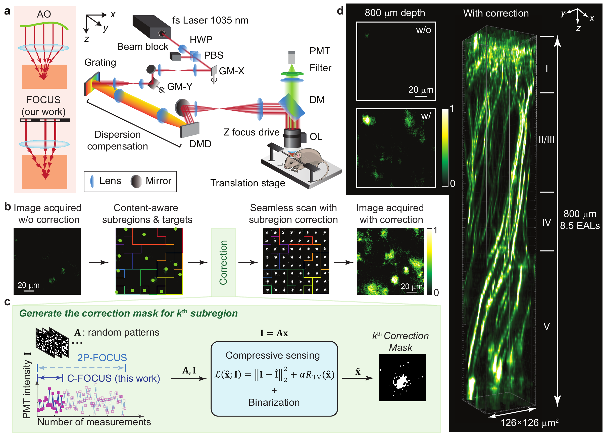

Two-photon microscopy is a powerful tool for in vivo imaging, but its imaging depth is typically limited to a few hundred microns due to tissue scattering, even with existing scattering correction techniques. Moreover, most active scattering correction methods are restricted to small regions by the optical memory effect. Here, we introduce compressive Fourier-domain intensity coupling for scattering correction (C-FOCUS), an active scattering correction approach that integrates Fourier-domain intensity modulation with compressive sensing for two-photon microscopy. C-FOCUS enhances fluorescence intensity by over 20-fold in vivo, accelerates scattering correction by 5-fold compared to previous approaches, and enables multipatch correction across fields of view spanning hundreds of microns beyond the memory effect range. Using C-FOCUS, we demonstrate high-resolution imaging of YFP-labeled neurons and FITC-labeled blood vessels at depths exceeding 900 μm in the intact mouse brain in vivo. Furthermore, we achieve transcranial imaging of YFP-labeled dendritic structures through the intact adult mouse skull. C-FOCUS provides a broadly applicable strategy for rapid, deep-tissue optical imaging in the living brain.

C-FOCUS enables two-photon imaging of YFP-labeled pyramidal neurons up to 800 μm below the dura in the somatosensory cortex using intensity-based scattering correction with compressive sensing.
a, Optical schematic of the C-FOCUS system and comparison with adaptive optics (AO). b, an uncorrected image is first acquired and segmented into subregions, each containing a local intensity peak that serves as a correction target. c, Correction masks for the subregions are measured and calculated sequentially using compressive sensing. d, In vivo imaging of YFP-labeled pyramidal neurons in the somatosensory cortex of a Thy1-YFP-H mouse through a cranial window using 1035 nm excitation, with and without scattering correction. With C-FOCUS, fluorescence intensity is enhanced fivefold, enabling imaging to a depth of 800 μm (8.5 EAL).
@misc{he2025compressivefourierdomainintensitycoupling,
title={Compressive Fourier-Domain Intensity Coupling (C-FOCUS) enables near-millimeter deep imaging in the intact mouse brain in vivo},
author={Renzhi He and Yucheng Li and Brianna Urbina and Jiandi Wan and Yi Xue},
year={2025},
eprint={2505.21822},
archivePrefix={arXiv},
primaryClass={physics.optics},
url={https://arxiv.org/abs/2505.21822},}